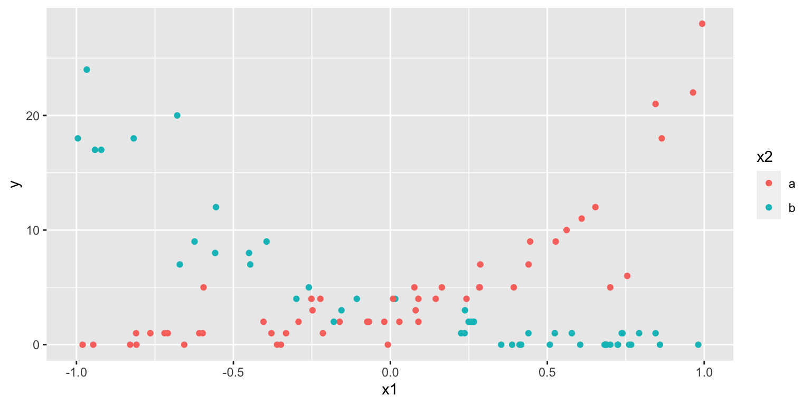
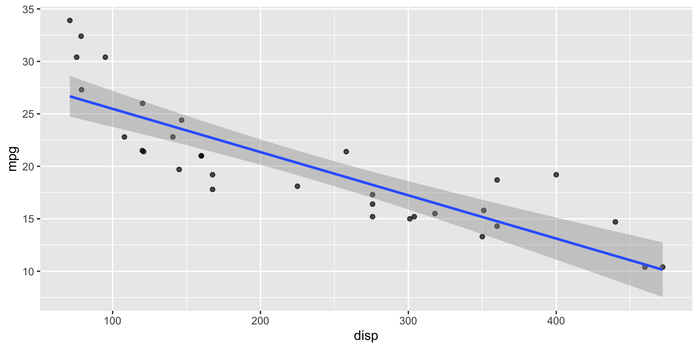
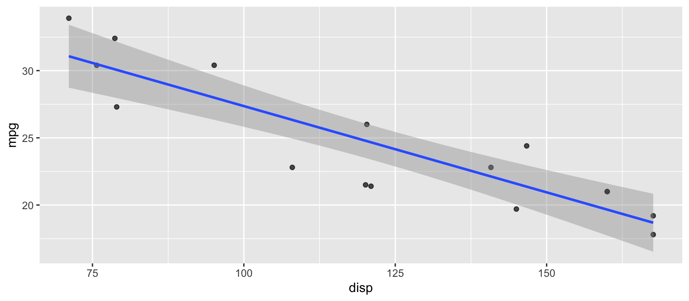

# A tibble: 3 × 2
region mean_rev
<chr> <dbl>
1 N 125
2 S NA
3 <NA> 90Programming as a Pathway to Statistical Thinking
July 10, 2026
TO DO: Black background, large block white letters, yes.
From “The Art of Statistics”
“There is no substitute for simply looking at data properly.”
David Spiegelhalter
Professor, University of Cambridge
The valuable skills shift from producing code to judging it:
A plausible-looking answer is now only a prompt away. The pedagogical challenge is rewarding genuine understanding over fluent generation.
# A tibble: 3 × 2
region mean_rev
<chr> <dbl>
1 N 125
2 S NA
3 <NA> 90Looks fine — until you notice the NA group and the dropped observation. Would a student catch this in AI-generated code?
Two tables whose keys are duplicated in ways we might not expect:
The AI’s fix — silence it:
relationship = "many-to-many" makes the warning disappear, but the warning was never a syntax problem — it flags a data problem. What if these were two different people who happen to share an id?
Does AI reliably spot this? How do we teach students to look?
The AI loads the data, fits the model, and reports tidy estimates:
# A tibble: 3 × 7
term estimate std.error statistic p.value conf.low conf.high
<chr> <dbl> <dbl> <dbl> <dbl> <dbl> <dbl>
1 (Intercept) 1.56 0.0637 24.5 3.51e-132 1.43 1.68
2 x1 -0.194 0.0822 -2.36 1.83e- 2 -0.355 -0.0326
3 x2b -0.0441 0.0940 -0.469 6.39e- 1 -0.229 0.140 To its credit, the AI even checks dispersion:
A dispersion of ~8.4 (≫ 1) signals strong overdispersion — Poisson standard errors and p-values are unreliable.
The estimates look authoritative. Whether you trust them depends on reading a diagnostic the prompt never asked for.

The picture invites questions the default model missed — like whether x1 and x2 interact.


The AI filtered the data — which changes the fitted line. Did we mean to subset the data, or just zoom the view? It never asked.
Learning modern workflows teaches students to:
These are the foundations of statistical thinking. The code is how we practice them.
If you can read it, you can review it. If you can review it, you can trust it.
Not syntax acquisition — a pathway to statistical thinking.
Design assignments and assessments for a moment when a plausible answer is a prompt away:
Not to keep AI out of the classroom —
but to produce graduates who can do more than
write a good prompt and hope for the best.
Beyond the Prompt: Programming as a Pathway to Statistical Thinking
Mine Çetinkaya-Rundel
Questions and discussion welcome.